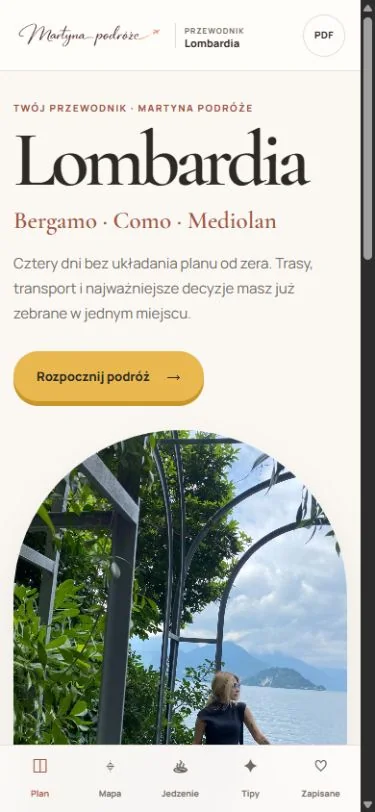
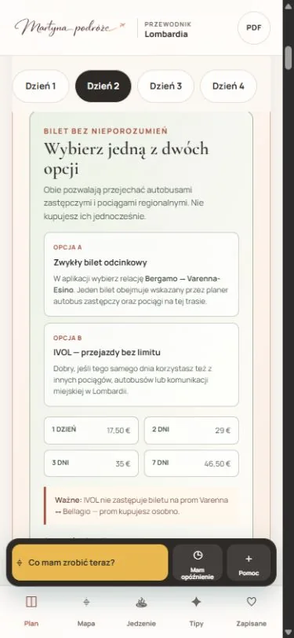
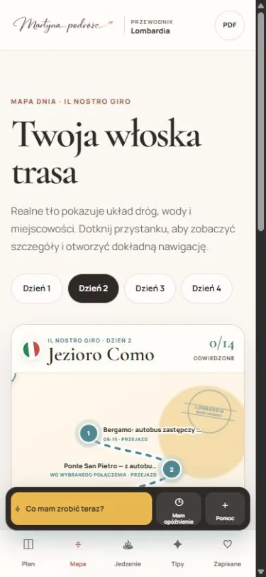

Przewodnik po Lombardii
Przewodnik
po Lombardii
Gotowy plan Bergamo, Como i Mediolanu — trasy, mapy, restauracje, transport i praktyczne wskazówki w jednym miejscu.
59 zł
79 zł
Kup teraz
Dostęp od razu działa na telefonie

Prawdziwy interfejs przewodnika
W środku
Co zawiera
- 4 gotowe dni
Plan krok po kroku, bez układania trasy od zera.
- Mapy i trasy
Kolejność punktów i przejścia między nimi.
- Sprawdzone restauracje
Miejsca po drodze i podpowiedzi, co zamówić.
- Transport i bilety
Przesiadki, ceny i praktyczne instrukcje.
- Plan na deszcz i mało czasu
Gotowe warianty, gdy dzień nie idzie zgodnie z planem.
- Praktyczne tipy
Informacje, które przydają się już na miejscu.
Bez fikcyjnego demo
Zobacz, jak wygląda przewodnik
To prawdziwe ekrany produktu: plan dnia, mapa i restauracje.


Bergamo · Como · Mediolan
Gotowy plan Lombardii
59 zł
Kup teraz
Dostęp od razu po zakupie